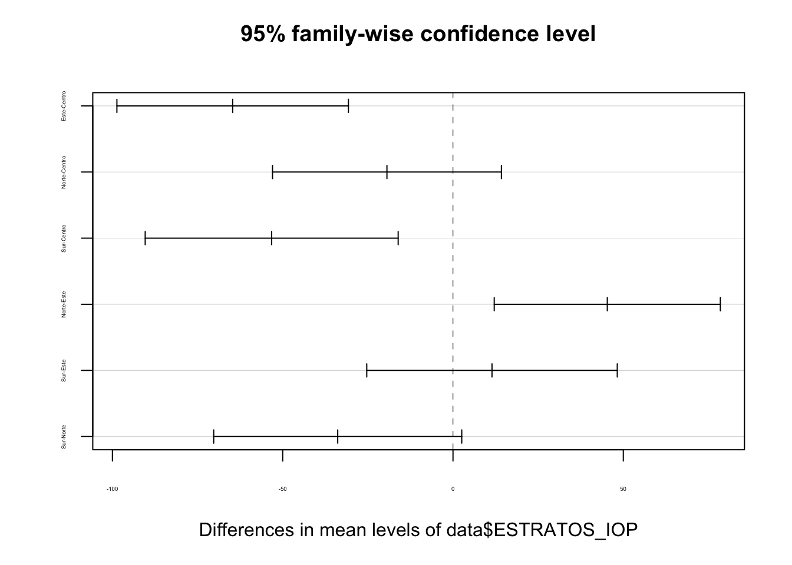

Práctica dirigida 12

Cargamos la base de datos:
library(rio)
data=import("LCV1819-1.sav")ANOVA
Recordemos la teoría, el test de ANOVA se usa para comparar la media de una variable dependiente numérica entre grupos de una variable de tipo factor con más de 2 grupos.
Repasemos nuestras hipótesis:
H0: No existe diferencia entre las medias poblacionales de los grupos evaluados / Hay igualdad entre las medias.
H1: Al menos una media poblacional de un grupo es diferente / Hay diferencias entre al menos un grupo o más.
Ejercicio 1:
¿Existe alguna diferencia estadísticamente significativa en el gasto en transporte (PE10A) entre los estratos de lima metropolitana (ESTRATOS_IOP)? Si existe, ¿entre qué grupos?
Preparemos nuestras variables
str(data$PE10A)## num [1:3744] 50 10 8 10 10 10 5 5 15 90 ...
## - attr(*, "label")= chr "En promedio, cuánto gasta su hogar en Transporte (monto)"
## - attr(*, "format.spss")= chr "F8.2"data$ESTRATOS_IOP=factor(data$ESTRATOS_IOP, levels = c(1:4) ,labels = c("Centro","Este","Norte","Sur"))str(data$PE10A)## num [1:3744] 50 10 8 10 10 10 5 5 15 90 ...
## - attr(*, "label")= chr "En promedio, cuánto gasta su hogar en Transporte (monto)"
## - attr(*, "format.spss")= chr "F8.2"Realicemos una tabla de la media y límites de los intervalos para ver qué podemos anticipar:
library(tidyverse)## ── Attaching core tidyverse packages ──────────────────────── tidyverse 2.0.0 ──
## ✔ dplyr 1.1.3 ✔ readr 2.1.4
## ✔ forcats 1.0.0 ✔ stringr 1.5.0
## ✔ ggplot2 3.4.3 ✔ tibble 3.2.1
## ✔ lubridate 1.9.2 ✔ tidyr 1.3.0
## ✔ purrr 1.0.2
## ── Conflicts ────────────────────────────────────────── tidyverse_conflicts() ──
## ✖ dplyr::filter() masks stats::filter()
## ✖ dplyr::lag() masks stats::lag()
## ℹ Use the conflicted package (<http://conflicted.r-lib.org/>) to force all conflicts to become errorslibrary(lsr)
data_grafico= data %>%
group_by(ESTRATOS_IOP)%>%
summarise(Desviacion = sd(PE10A, na.rm=T),
Media = mean(PE10A, na.rm=T),
min = ciMean(PE10A,conf = 0.95, na.rm=T)[1],
max = ciMean(PE10A,conf = 0.95, na.rm=T)[2],
n=length(PE10A))
data_grafico## # A tibble: 4 × 6
## ESTRATOS_IOP Desviacion Media min max n
## <fct> <dbl> <dbl> <dbl> <dbl> <int>
## 1 Centro 201. 114. 101. 128. 975
## 2 Este 103. 49.8 43.1 56.4 1043
## 3 Norte 477. 95.0 65.0 125. 1038
## 4 Sur 94.0 61.2 54.0 68.4 688Grafiquemos
ggplot(data_grafico,aes(x=ESTRATOS_IOP,y=Media))+geom_errorbar(aes(ymin=min,ymax=max),color="steelblue3",size=0.6)+xlab("ESTRATO")+ylab("Gasto en transporte en el hogar")+ylim(0,130)+theme_bw()Ahora, confirmemos la observación visual con la prueba ANOVA.
anova = aov(data$PE10A~data$ESTRATOS_IOP)
summary(anova)## Df Sum Sq Mean Sq F value Pr(>F)
## data$ESTRATOS_IOP 3 2341308 780436 9.881 1.74e-06 ***
## Residuals 3436 271386169 78983
## ---
## Signif. codes: 0 '***' 0.001 '**' 0.01 '*' 0.05 '.' 0.1 ' ' 1
## 304 observations deleted due to missingnessObsevamos que el p-value es bastante pequeño y menor a 0.05, por lo que podemos afirmar que existe diferencia de promedios de gasto en transporte según estrato de residencia: Lima Centro, Este, Norte y Sur. Lo que coincide con lo reportado por el gráfico. Confirmemos qué grupo/s tiene/n promedios distintos con la prueba Tukey.
TukeyHSD(anova)## Tukey multiple comparisons of means
## 95% family-wise confidence level
##
## Fit: aov(formula = data$PE10A ~ data$ESTRATOS_IOP)
##
## $`data$ESTRATOS_IOP`
## diff lwr upr p adj
## Este-Centro -64.69197 -98.67775 -30.706190 0.0000062
## Norte-Centro -19.39430 -52.99287 14.204264 0.4474926
## Sur-Centro -53.23831 -90.37509 -16.101541 0.0013284
## Norte-Este 45.29767 12.10080 78.494539 0.0025848
## Sur-Este 11.45366 -25.32009 48.227404 0.8541834
## Sur-Norte -33.84401 -70.26020 2.572178 0.0794053plot(TukeyHSD(anova),cex.axis=0.3)
Según la prueba Tukey, la media de gasto de transporte en los hogares de Lima Este es distinta a la de Lima Norte y Centro; mientras que el promedio de los hogares de Lima Sur es distinta a la de Lima Centro. Por el gráfico, podemos complementar esta intrepretación e indicar que los promedios más altos de gasto en transporte los reportan los hogares de Lima Centro y Norte. Asimismo, sobre los grupos con diferencia de promedios, podemos afirmar que el promedio de gasto en transporte en Lima Este es menor que el de Centro y Norte y que los hogares de Lima sur gastan menos, en promedio, que los de Lima Centro.
CHI CUADRADO Y PRUEBAS DE ASOCIACIÓN
Recordemos que chi cuadrado es una prueba para probar si existe asociación entre variables categóricas.
H0: Las variables son estadísticamente independientes/no hay dependencia H1: Las variables son estadísticamente dependientes.
OJO: Recuerden que hablar de asociación no implica causalidad.
Ejercicio 2:
¿Existe asociación entre el gasto en transporte y la edad (EDAD)?
La variable de gasto en transporte es numérica, (PE10A). Separemos esta variable en 3 grupos, nos guiaremos de los cuartiles para crear los grupos: Bajo(menos de 20) , medio (de 20 a 70) , Alto (más de 70). La nueva variable se llamará “GASTO_T”.
summary(data$PE10A)## Min. 1st Qu. Median Mean 3rd Qu. Max. NA's
## 0.00 10.00 20.00 81.33 70.00 14000.00 304data = data %>%
mutate(GASTO_T=case_when(PE10A<20 ~ "1.BAJO",
PE10A>=20 & EG2OTRO<=70 ~ "2.MEDIO",
PE10A>70 ~ "3.ALTO"))
data$GASTO_T= factor(data$GASTO_T)data$EDAD=factor(data$EDAD, levels = c(1:3),labels = c("18 a 29",
"30 a 44",
"más de 45"))Creemos nuestra tabla de contingencia
tabla=table(data$EDAD,data$GASTO_T)
tabla #con esta realizamos la prueba##
## 1.BAJO 2.MEDIO 3.ALTO
## 18 a 29 383 195 190
## 30 a 44 441 274 159
## más de 45 483 427 121En porcentajes: calculamos el 100% sobre “EDAD”
tabla_p= tabla %>%
prop.table(1)%>% #porcentaje por filas
round(3)*100
tabla_p##
## 1.BAJO 2.MEDIO 3.ALTO
## 18 a 29 49.9 25.4 24.7
## 30 a 44 50.5 31.4 18.2
## más de 45 46.8 41.4 11.7Grafiquemos:
toPlot = as.data.frame(tabla_p)
names(toPlot) = c("Edad", "Gasto", "Porcentaje")
ggplot(toPlot, aes(fill=Gasto, y=Porcentaje, x=Edad)) +
geom_bar(position="fill", stat="identity") +
labs( y = 'Porcentaje (%)', x = ' ')+
ggtitle('Gasto en transporte según grupo etario')+
theme_bw()
El grafico y la tabla muestran que en los 3 grupos etarios la mayoría tiene un gasto bajo en transporte. Sin embargo, se puede observar que en comparación, la proporción que tiene un gasto elevado entre los más jóvenes es mayor que dentro de los otros grupos etarios.
chisq.test(tabla)$expected##
## 1.BAJO 2.MEDIO 3.ALTO
## 18 a 29 375.5241 257.4366 135.0393
## 30 a 44 427.3543 292.9682 153.6775
## más de 45 504.1216 345.5952 181.2832Podemos proceder con la prueba
chisq.test(tabla)##
## Pearson's Chi-squared test
##
## data: tabla
## X-squared = 79.615, df = 4, p-value < 2.2e-16De acuerdo al p–value obtenido en la prueba de hipótesis de Chi2, al ser menor de 0.05, podemos rechazar la hipótesis nula (Las variables son independientes). Por lo tanto concluimos que existe dependencia entre el gasto en transporte (bajo/medio/alto) y el grupo etario.
CORRELACIÓN
Esta es una medida de relación entre dos variables cuantitativas o numéricas.
H0 = No existe correlación las variables H1 = Sí existe correlación entre las variables
En esta prueba, no es suficiente analizar el pvalue, también debemos interpretar el coeficiente de correlación de pearson. Este nos indica la fuerza y la dirección de la relación entre las variables.
Ejercicio 3:
En el caso de las personas que de Lima Norte, ¿Existe relación entre el gasto en transporte (PE10A) y el tiempo en años que la persona ha vivido en Lima
Primero, debemos filtrar solo los casos de Lima Norte
str(data$EG2OTRO)## num [1:3744] NA NA NA NA 2 NA 63 50 NA NA ...
## - attr(*, "label")= chr "¿Hace cuántos años que vive en la ciudad de Lima? - Especificar número de años"
## - attr(*, "format.spss")= chr "F8.2"data_cor=data%>%
filter(ESTRATOS_IOP=="Norte")Previo a la prueba, realicemos un gráfico de dispersión para hacernos una idea inicial
ggplot(data_cor,aes(x=PE10A, y=EG2OTRO)) +
geom_point(colour="darkblue") + xlab("Gasto en transporte") + ylab("Años en Lima") +
ggtitle("Relación entre el gasto en transporte y el tiempo (en años) \n que se ha vivido en Lima - Solo Lima Norte") + xlim(0,1000)+ylim(0,30)+
theme_light() +
geom_smooth(method="lm", se = F)## `geom_smooth()` using formula = 'y ~ x'Podemos ver bastante dispersión, no parece haber correlación entre las variables.
cor.test(data_cor$PE10A, data_cor$EG2OTRO)##
## Pearson's product-moment correlation
##
## data: data_cor$PE10A and data_cor$EG2OTRO
## t = -0.15352, df = 464, p-value = 0.8781
## alternative hypothesis: true correlation is not equal to 0
## 95 percent confidence interval:
## -0.09789981 0.08376338
## sample estimates:
## cor
## -0.007127018Confirmando lo que mostraba el gráfico, no se rechaza la hipótesis nula; en ese sentido podemos afirmar que en el caso de las personas de Lima Norte, no hay relación entre el gasto en transporte y los años que han vivido en Lima.
REGRESIÓN SIMPLE
Recordemos que con la regresión predecimos el valor de una variable con los valores de otra. La regresión lineal simple es un método útil para predecir una respuesta cuantitativa Y partiendo de una sola variable predictora X, asumiendo que hay una relación aproximadamente lineal entre X e Y.
Pasos para la regresión lineal simple
Paso 1: Analizar la asociación entre las variables de insumo: Diagrama de dispersión y correlación bivariada, en caso de variables numéricas
Paso 2: Conocer qué tanto explica el modelo: COEFICIENTE DE DETERMINACIÓN – R2
Paso 3: Conocer los parámetros del modelo: TABLA DE COEFICIENTES
Paso 4: Construir la ecuación y predecir
Ejercicio 4:
Queremos analizar posibles modelos que expliquen la percepción de los limeños acerca del transporte público informal (buses, cousters y combis, y mototaxis). Para esto calcularemos un indice aditivo de la calificación de los servicios de buses (MT7A), de cousters y combis (MT7B) y de mototaxis (MT7D), que varíe de 0 a 100.
Pero, ¿qué puede influir en la percepción de los limeños acerca del transporte público? Para este ejercicio emplearemos dos variables:
Creación del índice:
data$evaluacion_ti = ((data$MT7A + data$MT7B + data$MT7D)-3)/12*100
summary(data$evaluacion_ti)## Min. 1st Qu. Median Mean 3rd Qu. Max. NA's
## 0.00 33.33 50.00 47.95 58.33 100.00 1626Paso 1: Diagrama de dispersión y correlación bivariada
ggplot(data, aes(x=EG2OTRO, y=evaluacion_ti)) +
geom_point(colour="lightsteelblue4") +
xlab("Tiempo en Lima") +
ylab("Indice de percepción sobre el transporte")+ theme_light() +
geom_smooth(method="lm", se = T, colour="grey5")## `geom_smooth()` using formula = 'y ~ x'Correlación:
cor.test(data$evaluacion_ti, data$EG2OTRO, method = "pearson")##
## Pearson's product-moment correlation
##
## data: data$evaluacion_ti and data$EG2OTRO
## t = -2.5253, df = 975, p-value = 0.01172
## alternative hypothesis: true correlation is not equal to 0
## 95 percent confidence interval:
## -0.14260835 -0.01798253
## sample estimates:
## cor
## -0.08061048Podemos observar que existe correlación entre ambas variables (p valor = 0,012) y que la correlación es negativa y que no es relevante.
modelo1 = lm(data$evaluacion_ti ~ data$EG2OTRO)
summary(modelo1)##
## Call:
## lm(formula = data$evaluacion_ti ~ data$EG2OTRO)
##
## Residuals:
## Min 1Q Median 3Q Max
## -50.153 -8.572 1.053 9.645 53.120
##
## Coefficients:
## Estimate Std. Error t value Pr(>|t|)
## (Intercept) 50.84202 0.98083 51.836 <2e-16 ***
## data$EG2OTRO -0.08614 0.03411 -2.525 0.0117 *
## ---
## Signif. codes: 0 '***' 0.001 '**' 0.01 '*' 0.05 '.' 0.1 ' ' 1
##
## Residual standard error: 17.15 on 975 degrees of freedom
## (2767 observations deleted due to missingness)
## Multiple R-squared: 0.006498, Adjusted R-squared: 0.005479
## F-statistic: 6.377 on 1 and 975 DF, p-value: 0.01172Ahora, debemos responder las siguientes preguntas:
- ¿Qué tanto explica el modelo?
Con un valor de 0,006, podemos afirmar que el 0,6% de la variabilidad del índice aditivo de la calificación del transporte es explicada por el tiempo que una persona vive en Lima.
- ¿La variable aporta al modelo?
H0: La variable X no tiene un efecto estadísticamente significativo en la variable Y. H1: La variable X tiene un efecto estadísticamente significativo en la variable Y.
Con un p valor menor a 0,05 podemos afirmar que la variable “tiempo que una persona vive en Lima” aporta al modelo de regresión.
Paso 5: Construir la ecuación y predecir
Y = 50.84202 - 0.0861 * X
Realizar el ejercicio con otra variable explicativa: Gasto en transporte (PE10A)
REGRESIÓN MÚLTIPLE
De manera independiente, vemos que cada modelo explica de manera diferente nuestra variable de interés, ahora probemos combinando algunas de estas variables y busquemos alguna diferencia en el porcentaje de predicción.
Ejercicio 5:
VD = Evaluación del transporte informal (evaluacion_ti) VI = Gasto de su hogar en transporte (PE10A) + Tiempo que vive en la ciudad de Lima (EG2OTRO)
modelo2 = lm(data$evaluacion_ti ~ data$EG2OTRO + data$PE10A)
summary(modelo2)##
## Call:
## lm(formula = data$evaluacion_ti ~ data$EG2OTRO + data$PE10A)
##
## Residuals:
## Min 1Q Median 3Q Max
## -50.699 -8.847 1.073 9.359 52.319
##
## Coefficients:
## Estimate Std. Error t value Pr(>|t|)
## (Intercept) 51.41257 1.06017 48.495 < 2e-16 ***
## data$EG2OTRO -0.08111 0.03590 -2.259 0.02410 *
## data$PE10A -0.01298 0.00431 -3.012 0.00267 **
## ---
## Signif. codes: 0 '***' 0.001 '**' 0.01 '*' 0.05 '.' 0.1 ' ' 1
##
## Residual standard error: 17.13 on 896 degrees of freedom
## (2845 observations deleted due to missingness)
## Multiple R-squared: 0.01571, Adjusted R-squared: 0.01352
## F-statistic: 7.152 on 2 and 896 DF, p-value: 0.0008287Ahora, debemos responder las siguientes preguntas:
- ¿El modelo es válido?
Con un p valor menor a 0,05 podemos rechazar la hipótesis nula. Es decir, rechazamos que el modelo no sea válido.
- ¿Qué tanto explica el modelo?
Con un valor de 0,014, podemos afirmar que el 1,4% de la variabilidad del índice aditivo de la calificación del transporte es explicada por el tiempo que una persona vive en Lima y por el gasto que emplea su hogar en transporte.
- ¿La variable aporta al modelo?
Con un p valor menor a 0,05 podemos afirmar que ambas variables aportan al modelo de regresión.
Paso 5: Construir la ecuación y predecir
Y = 51.41257 - 0.08111 * X1 - 0.01298 * X2